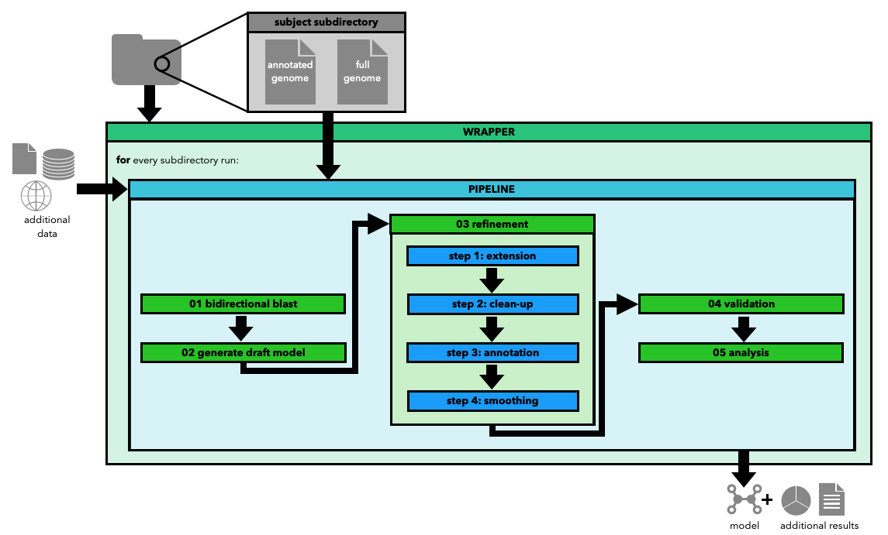

Welcome to SPECIMEN!
SPECIMEN is a Python package that provides functionalities for strain-specific curation of metabolic model using a high-quality template model.
Overview
The main core of SPECIMEN is an automated pipeline that curates a new GEM based on a genome, a template model and some additional information. The pipeline can be accessed from the command line or from inside a Python script. An overview of the different steps of the pipeline can be seen below.
Additionally, SPECIMEN allows the use of the functions / steps of the pipeline separatly and provides further functionalities for:
setting up and collecting some (but not all) of the data needed for the pipeline
building, manipulation and storing different media as well as a pre-build database